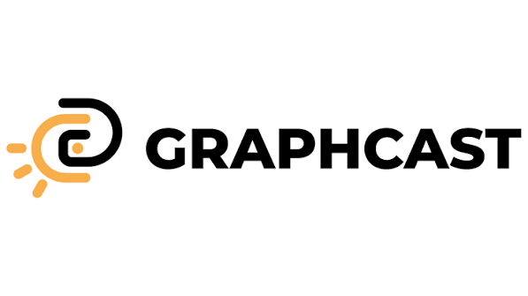
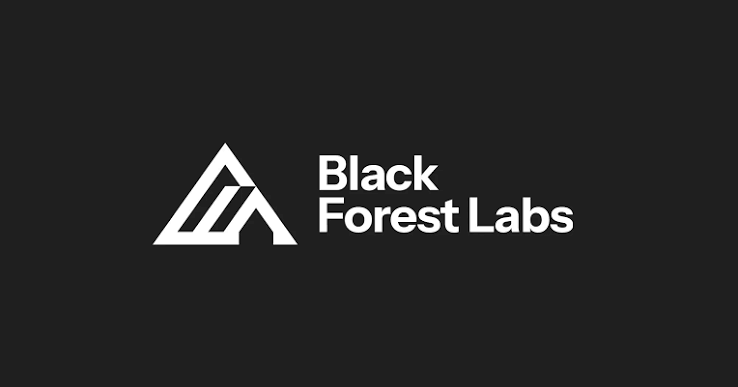
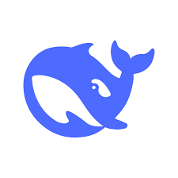
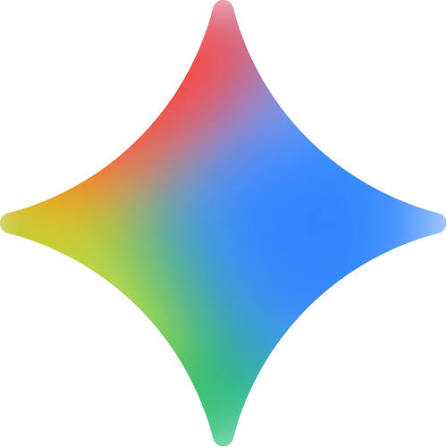
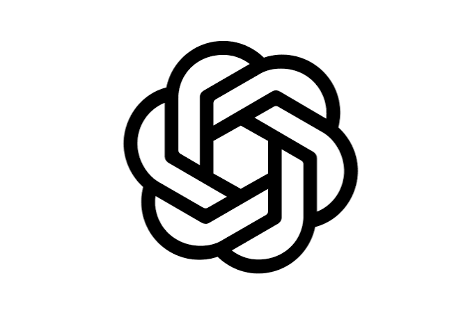
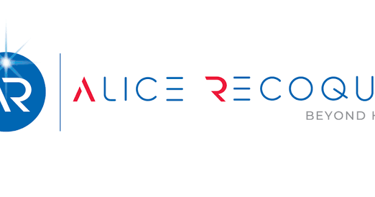
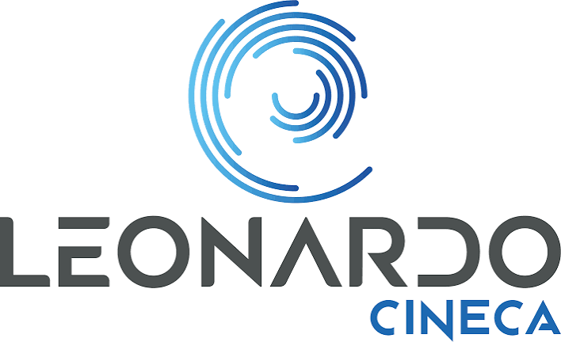
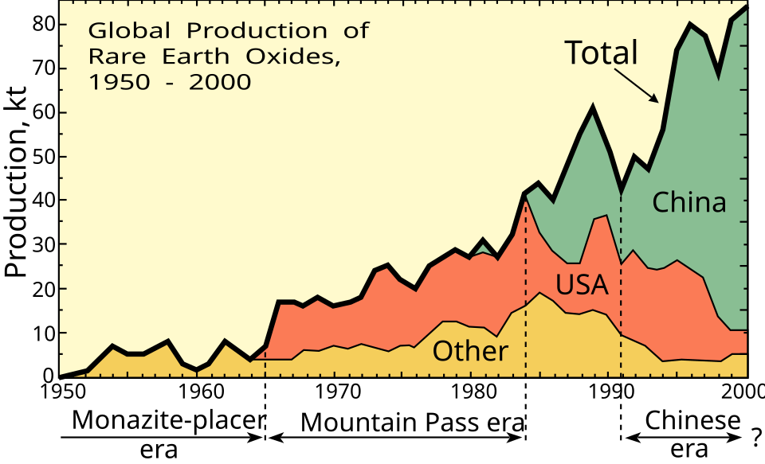
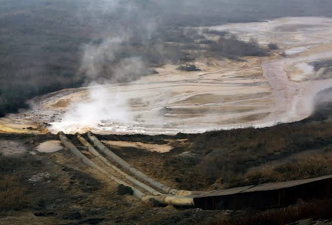
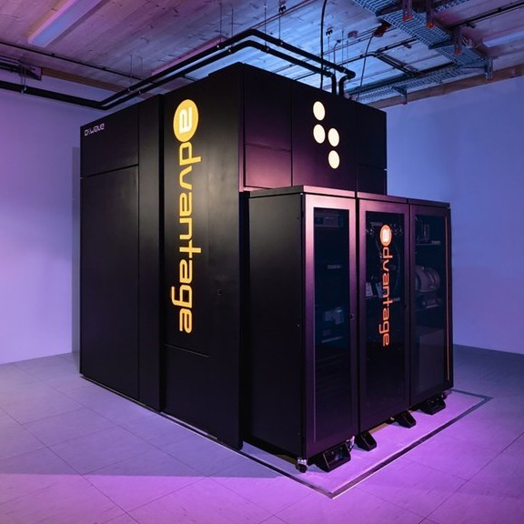

Future of AI & HPC — 01 | Pietro Morichetti
What is High-Performance Computing, and why is everyone building (on) it?
HPC clusters: thousands of processors to run calculations far beyond what a single machine can handle — the foundation both of decades of scientific research and of today's AI boom.
Scientific research
Exascale race
China's LineShine hit 2.2 exaflops in 2026, passing the US's El Capitan — the first non-US #1 since 2017
Europe's flagship
JUPITER (Jülich, Germany) is the EU's first exascale system, built for climate and materials research (TOP500)
China's LineShine hit 2.2 exaflops in 2026, passing the US's El Capitan — the first non-US #1 since 2017
Europe's flagship
JUPITER (Jülich, Germany) is the EU's first exascale system, built for climate and materials research (TOP500)


AI training
Large language models are trained on HPC-class GPU clusters — the same infrastructure once reserved for national labs.



Europe's answer
AI Factories
19 EuroHPC AI Factories + 13 Antennas give startups and SMEs free access to AI-optimised supercomputers — a €10B bet on keeping Europe competitive.
EuroHPC network


Future of AI & HPC — 02 | Pietro Morichetti
A worldwide revolution is reshaping companies, jobs, and states
New industry giants
Anthropic and OpenAI became industry-defining companies in a few years, built around large language models — DeepSeek shows the race is global.
725B $
cloud AI-infrastructure spending planned for 2026 by Amazon, Google, Meta and Microsoft — up 77% from 2025
Forecasts agree it keeps growing: +$147B by 2030 (Technavio), roughly double again by 2032 (SNS Insider)
A matter of national security
The US treats AI compute as critical infrastructure tied to military and economic superiority — ranked by Harvard's Belfer Center alongside nuclear, aerospace, and biotech.
US restricts, EU builds
Europe has no equivalent designation yet — still building the HPC capacity to compete
China is weighing the same move, discussing curbs on overseas access to its top models — treating frontier AI as a strategic asset
Capability outpaces adoption
What LLMs can already do outpaces how much they're actually used — especially in white-collar roles. Anthropic Economic Index, "Labor market impacts of AI"
Computer & math
94% → 36%
Office & admin
90% → 34%
Business & finance
94% → 28%
Legal
89% → 20%
Theoretical capability
Observed on-the-job use
Entry-level hiring falls first
Entry-level headcount across occupations, indexed by age — since generative AI went mainstream.
2021
2022
2023
2024
2025
Early career, 22–25
Experienced, 35–49
Future of AI & HPC — 03 | Pietro Morichetti
The next constraint isn't ideas — it's resources
Water & electricity
176 TWh
4.4% of US electricity demand in 2023, plus 17.4B gallons of water — set to triple by 2028 (CRS)
One Meta data center takes 10% of a Georgia town's daily water — taps now run undrinkable (Rep. Ocasio-Cortez)
Industry response: NVIDIA's Rubin platform is 100% liquid-cooled — up to 100% less water in favorable climates (NVIDIA)
Rare minerals

WikipediaExtraction has a cost: Baotou's tailings lake

left residents with elevated cancer rates (The Guardian)Harder to solve: no quick fix — Western refining is years away, and Beijing controls exports.
Hardware demands
70%
of all memory chips now go to data centers, up from ~20–30% in 2022 (Tech Insider, citing IDC)
Apple has raised MacBook and iPad prices amid an "unprecedented" memory crunch (BBC)
My prediction: temporary — should ease once data-center buildout slows and 2027–28 capacity arrives
"
Future of AI & HPC — My predictionDriven by LLM versatility, computing will split into a hybrid HPC-Edge paradigm—reserving high-performance infrastructure for complex research and heavy hosting, while compressed open models handle routine tasks locally. This hybrid framework will drive economic and scientific growth until the next major disruption: quantum computing

.